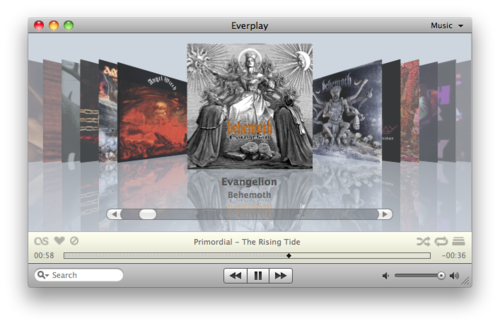

Bilgisayarda çalışırken genelde müzik dinliyorum. Bir albümü başından sonuna dinlemeyi severim.
Şarkıları karıştırıp dinlemem, programların müzik parçalarımı verdiğim yıldızlara göre yada en çok dinlediğim parçaları “tanıyarak” sıralamasından hiç hoşlanmam. iTunes’un karmaşık seçeneklerini hiç kullanmadım, kullanmaya da çalışmadım. Durum böyle olunca basit müzik programları işimi görüyor.
Bununla birlikte dinlediğim parçaların Last.fm‘e skroplanması benim için fazlasıyla önemli bir konu. Bunu yapabilmek için ya arka planda ek bir program çalıştırmak gerekiyor, ya da karmaşık programları kullanıyor olmak gerekiyor.
Everplay işte bu iki işi gayet başarı ile becerebilen bir program. Albümü seçiyorum ve dinliyorum, dinlediğim şarkılar Last.fm’e skroplanıyor. Eğer bir şarkıyı beğenirsem twitter’da otomatik olarak güncelleniyor, dinlediğim şarkıyı twitter’a göndermekte sadece bir kısayol tuşuna bakıyor.

Hafıza kullanımı iTunes’a göre daha iyi olmasına karşın programın memory leaklerden biraz daha optimize edilerek kurtarılması lazım. Uzunca bir süredir Everplay kullanıyorum, herhangi bir sorunla karşılaşmadım.
Fiyatı biraz yüksek olsa da bizleri hantal programlardan kurtaran programcılar ufak bir teşekkürü hak ediyorlar doğrusu…